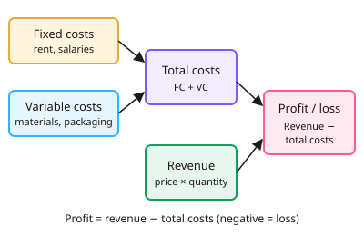

GCSE Business · Topic 7
Financial Decisions and Analysis
This topic covers the numbers behind every business decision, revenue, costs, profit and cash.
We practise break-even, cash-flow forecasts and profit margins, and compare different sources of finance.
Finally we use investment appraisal and return on capital to judge whether a project is worth it.
- 6 subtopics
- 358 questions
- Free: 7.1 notes and 10 questions
In this topic
- 7.1Revenue, costs and profit: fixed, variable and total costs, and calculating profit and lossFree below · 55 questions
- 7.2Break-even analysis: calculating break-even output, drawing break-even charts, margin of safety and its limitationsOpen in Full Marks · 58 questions
- 7.3Cash flow forecasts: constructing and interpreting them, cash vs profit, and ways to improve cash flowOpen in Full Marks · 50 questions
- 7.4Sources of finance: internal vs external, short- vs long-term, and choosing suitable financeOpen in Full Marks · 85 questions
- 7.5Income statements and profitability: gross profit, net profit and margin calculations, and ways to improve profitOpen in Full Marks · 39 questions
- 7.6Investment appraisal and return on capital: average rate of return and ROCEOpen in Full Marks · 71 questions
7.1 · Free notes
Revenue, costs and profit: fixed, variable and total costs, and calculating profit and loss

Key points
- Revenue (sales turnover) is the money received from selling goods or services: revenue = selling price × quantity sold, e.g. £12 × 5,000 = £60,000.
- Fixed costs do not change with output in the short run, e.g. rent, salaries, insurance and loan interest. They must be paid even if nothing is produced.
- Variable costs change directly with output, e.g. raw materials, packaging and piece-rate wages. Total variable cost = variable cost per unit × output.
- Total costs = fixed costs + variable costs. For example, £5,000 + (£4 × 1,500 units) = £11,000.
- Profit = total revenue − total costs. A negative answer is a loss. Always show your working and include the £ sign.
- Average (unit) cost = total costs ÷ output. It usually falls as output rises because fixed costs are spread over more units (an economy of scale).
- On an income statement, gross profit = revenue − cost of sales and net profit = gross profit − expenses (overheads). Interest and tax are deducted where given.
- Profit margins show profit as a percentage of revenue. Gross profit margin = gross profit ÷ revenue × 100 and net profit margin = net profit ÷ revenue × 100. Use them to compare years or competitors.
- Direct costs are linked to making a product (materials, direct labour). Indirect costs (overheads) such as admin cannot be traced to one product. Semi-variable costs have both parts, e.g. a phone bill with line rental plus usage.
- Profit rewards owners, can be reinvested (retained profit) to fund growth and reassures lenders. Continued losses threaten survival. Profit can be raised by increasing revenue or cutting costs.
- Exam tip: revenue is not profit. Higher sales do not always mean higher profit if costs rise faster.
In more detail
- Full worked example: price £20, sales 3,000 units, fixed costs £25,000, variable cost £9 per unit → revenue £60,000, total costs £25,000 + £27,000 = £52,000, profit = £8,000.
- Unit cost falls with output: in that example average cost = 52,000 ÷ 3,000 = £17.33. At 5,000 units it would be (25,000 + 45,000) ÷ 5,000 = £14.
- Classify the cost: a delivery van's fuel rises with the number of deliveries (variable), but its insurance does not (fixed).
- Semi-variable costs: some costs, such as a phone bill with fixed line rental plus call charges, are partly fixed and partly variable.
Practice
Revenue, costs and profit: fixed, variable and total costs, and calculating profit and loss: 10 questions
Pick an answer to check it, or open the answer for the explanation.
1. A bakery sells 2,000 loaves at £1.50 each. What is its total revenue?
- £1,333
- £3,000
- £2,000
- £3,001.50
Show answer
B: £3,000. Revenue = price × quantity sold = £1.50 × 2,000 = £3,000.
2. Which of these is a variable cost for a café?
- Cost of coffee beans used
- Annual buildings insurance
- Manager's annual salary
- Monthly rent of the premises
Show answer
A: Cost of coffee beans used. Coffee beans are used in proportion to the drinks made, so the cost rises with output. Rent, salaries and insurance stay the same whatever the output in the short run.
3. A firm has fixed costs of £5,000 and variable costs of £4 per unit. What are total costs at 1,500 units?
- £6,000
- £11,000
- £9,000
- £11,500
Show answer
B: £11,000. Variable costs = £4 × 1,500 = £6,000. Total costs = fixed + variable = £5,000 + £6,000 = £11,000.
4. A business has revenue of £40,000 and total costs of £46,500. What is the result?
- Loss of £6,500
- Profit of £6,500
- Profit of £86,500
- Break-even
Show answer
A: Loss of £6,500. Profit = revenue − total costs = £40,000 − £46,500 = −£6,500, which is a loss of £6,500.
5. A firm sells 5,000 units at £12. Variable cost is £7 per unit and fixed costs are £20,000. What is its profit?
- £25,000
- £40,000
- £15,000
- £5,000
Show answer
D: £5,000. Revenue £60,000 − variable costs £35,000 − fixed costs £20,000 = £5,000 profit.
6. Revenue is £120,000, cost of sales £70,000 and expenses £30,000. What is net profit?
- £20,000
- £90,000
- £80,000
- £50,000
Show answer
A: £20,000. Gross profit = £120,000 − £70,000 = £50,000. Net profit = gross profit − expenses = £50,000 − £30,000 = £20,000.
7. A firm has gross profit of £24,000 on revenue of £80,000. What is its gross profit margin?
- 30%
- 70%
- 24%
- 3.3%
Show answer
A: 30%. Gross profit margin = gross profit ÷ revenue × 100 = 24,000 ÷ 80,000 × 100 = 30%.
8. Total costs are £18,000 for an output of 600 units. What is the average cost per unit?
- £30
- £3.33
- £18
- £300
Show answer
A: £30. Average cost = total costs ÷ output = £18,000 ÷ 600 = £30 per unit.
9. Why does average cost per unit usually fall as output rises?
- Variable cost per unit falls to zero
- Fixed costs are spread over more units
- Fixed costs rise more slowly than sales
- Revenue rises faster than costs
Show answer
B: Fixed costs are spread over more units. Total fixed costs stay the same, so each extra unit carries a smaller share of them. This lowers the average cost per unit.
10. A firm's fixed costs are £10,000 and variable costs are £6 per unit. What are total costs at 2,000 units?
- £32,000
- £20,000
- £12,000
- £22,000
Show answer
D: £22,000. Variable costs = £6 × 2,000 = £12,000. Total costs = £10,000 + £12,000 = £22,000.
Keep going in Full Marks
Full Marks has 55 questions on Revenue, costs and profit: fixed, variable and total costs, and calculating profit and loss (45 more than here), set out in practice levels. You also get notes and 3D models for all 6 subtopics of Financial Decisions and Analysis, plus games, timed exams and past papers.